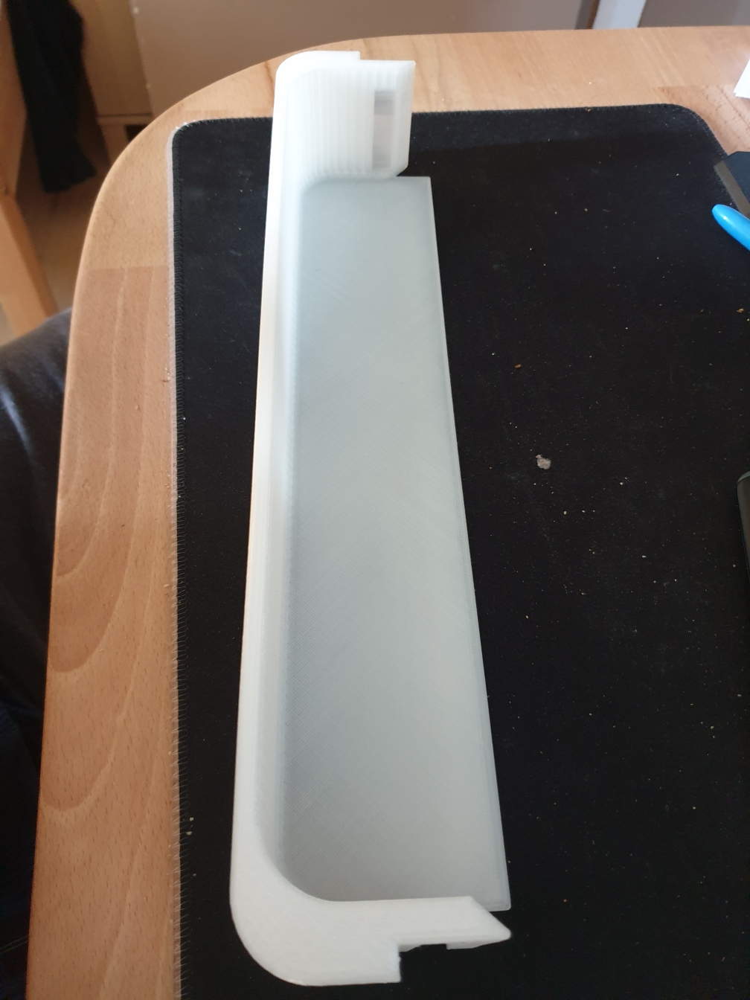

Conception, prototypage et impression de pièces fonctionnelles
Conception sur SolidWorks et impression 3D en résine (Elegoo Saturn 3). Travail sur la diffusion de la lumière.

Modélisation CAO d'un balconnet sur-mesure, optimisé pour la résistance mécanique et la durabilité, en remplacement de l'original fragile.
Conception d'une pièce technique de remplacement pour le mécanisme d'ouverture du capot de la voiture. Pièce compatible, ergonomique et résistante.
Remplacement d'une poignée défectueuse par une version renforcée, conçue pour supporter les contraintes mécaniques lors de l'utilisation.
Support ergonomique pour l'écran de contrôle de l'imprimante 3D (Elegoo Neptune 4 Max) avec déport intégré du port USB de l'appareil. Permet une meilleure visibilité, sécurise l'interface et autorise le paramétrage à une seule main.
Support universel optimisé pour le télétravail. Offre un angle de vue idéal et une excellente stabilité sur un bureau.
Pièce concue pour permettre le rangement ou le maintien de cannes anglaises d'une personne à mobilité réduite. Victime de son succès, cette modeste réalisation équipe désormais tout manche susceptible d'être accroché pour être rangé, et plus particulièrement les balais.
Supports de fixation (angle de murs, poutre de charpente ou meuble) pour caméra de surveillance. Avec déport pour favoriser l'angle de vue. Légers et robustes, ils permettent un montage rapide et fiable.